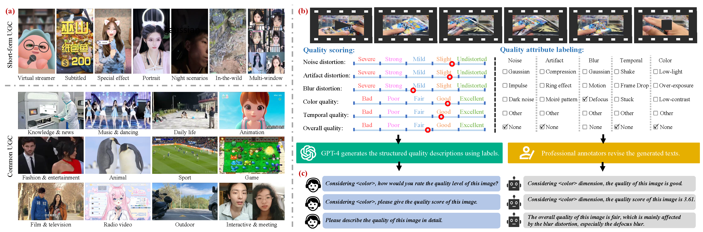
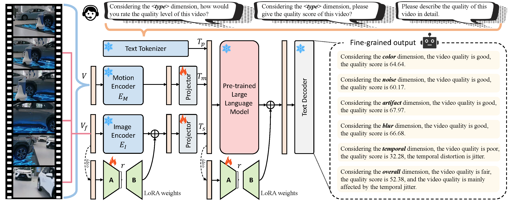
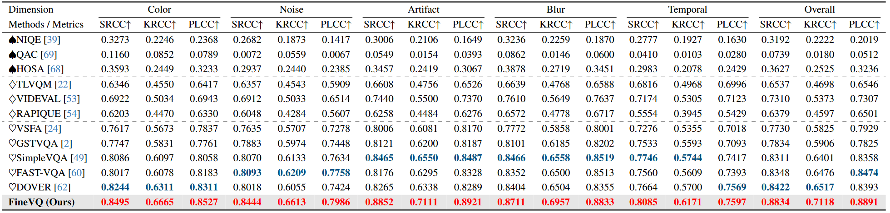
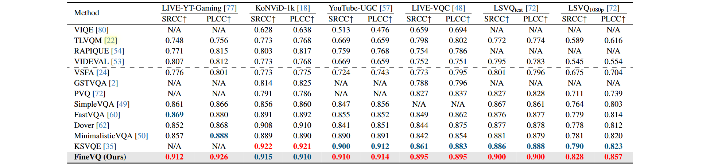

FineVD
An overview of the content and construction process of FineVD. (a) Example videos from our database, which contains both common UGC videos and short-form UGC videos. (b) The illustration of subjective data annotation methods, including both quality scoring and quality attribute labeling processes. (c) The quality-related question-answering pairs generated by GPT-4 and revised by human annotators.

FineVQ
An overview of our proposed FineVQ model. Our model consists of three feature encoders, including an image feature extractor for extracting spatial features from sparse video frames, a motion feature extractor for extracting motion features from the entire video, and a text encoder for extracting aligned text features from prompts. The extracted features are then aligned through projectors and fed into a pre-trained LLM to generate the output results. LoRA weights are introduced to the pre-trained image encoder and the large language model to adapt the models to the quality assessment task.

Performance on FiveVQ
Performance of state-of-the-art models and the proposed FineVQ on our established FineVD database in terms of the quality scoring task.

Performance on Other VQA databases
Performance comparison between state-of-the-art VQA methods and the proposed FineVQ on six UGC VQA databases
